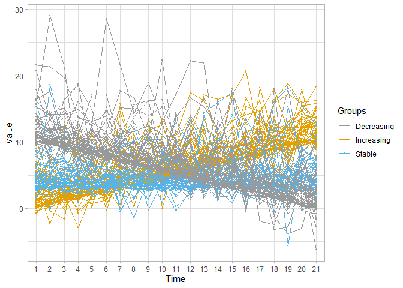
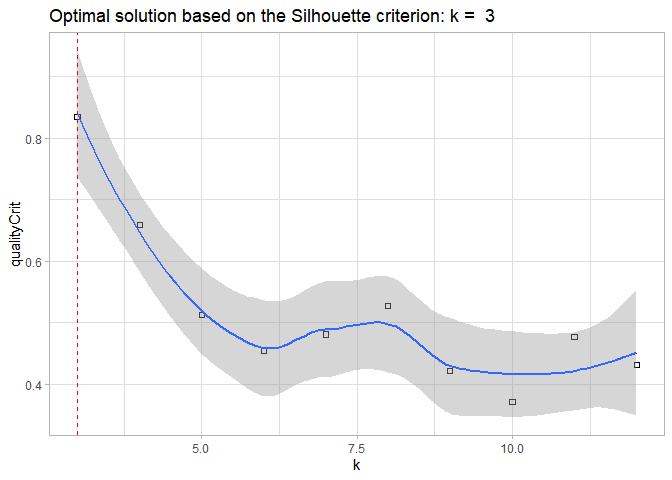

An R package for analyzing and clustering longitudinal data
The akmedoids package advances the clustering of longitudinal datasets in order to identify clusters of trajectories with similar long-term linear trends over time, providing an improved cluster identification as compared with the classic kmeans algorithm. The package also includes a set of functions for addressing common data issues, such as missing entries and outliers, prior to conducting advance longitudinal data analysis. One of the key objectives of this package is to facilitate easy replication of a recent paper which examined small area inequality in the crime drop (Adepeju et al. 2020). Many of the functions provided in the akmedoids package may be applied to longitudinal data in general.
For more information and usability, check out details on CRAN.
CRAN
From an R console, type:
#install.packages("akmedoids")
library(akmedoids)
#Other libraries
library(tidyr)
library(ggplot2)
#> Warning: package 'ggplot2' was built under R version 4.0.3
library(reshape)
#> Warning: package 'reshape' was built under R version 4.0.3
library(readr)To install the development version of the package, type remotes::install_github("MAnalytics/akmedoids"). Please, report any installation problems in the issues.
Given a longitudinal datasets, the following is an example of how akmedoids could be used to extract clusters of trajectories with similar long-term trends over time. We will use a simulated dataset (named simulated.rda) stored in the data/ directory.
Simulating data set which comprised of three clusters with distinct mean directional change over time. Each group contains 50 trajectories.
dir.create("input") # create a folder
#> Warning in dir.create("input"): 'input' already exists
#function for creating longitudinal noise
noise_fn <- function(x=3, time){
rnorm(length(time), mean=0, x)}
#function for simulating a trajectory group
sim_group <- function(gr_baseline, sd, time){
intcp_errors <- rgamma(1, shape=2, scale=sd) #intercept error
mean_traj = gr_baseline + intcp_errors
traj = mean_traj + noise_fn(intcp_errors, time)
}
#time steps
t_steps <- c(0:20)
#increasing group
i_gr <- NULL
for(i in seq_len(50)){
i_gr <- rbind(i_gr,
sim_group(gr_baseline=(0.5*t_steps),
sd=1, time=t_steps))
}
#stable group
s_gr <- NULL
for(i in seq_len(50)){
s_gr <- rbind(s_gr,
sim_group(gr_baseline=rep(3,length(t_steps)),
sd=1, time=t_steps))
}
#decreasing group
d_gr <- NULL
for(i in seq_len(50)){
d_gr <- rbind(d_gr,
sim_group(gr_baseline=(10 - (0.5*t_steps)),
sd=1, time=t_steps))
}
#combine groups
simulated <- data.frame(rbind(i_gr, s_gr, d_gr))
#add group label
simulated <- data.frame(cbind(ID=1:nrow(simulated), simulated))
colnames(simulated) <- c("ID", 1:(ncol(simulated)-1))
#save data set
##simulated = readr::write_csv(simulated, "input/example-simulated.csv")#import already save simulated data
Import_simulated = read_csv(file="./input/example-simulated.csv")
#preview the data
head(Import_simulated)
#> # A tibble: 6 x 22
#> ID `1` `2` `3` `4` `5` `6` `7` `8` `9` `10` `11`
#> <dbl> <dbl> <dbl> <dbl> <dbl> <dbl> <dbl> <dbl> <dbl> <dbl> <dbl> <dbl>
#> 1 1 -0.759 1.90 3.02 -0.355 1.63 4.24 4.52 7.93 5.18 6.84 6.09
#> 2 2 5.52 3.22 4.49 4.61 11.2 5.90 15.7 7.76 7.46 9.76 6.61
#> 3 3 1.52 1.09 2.05 1.89 0.728 1.27 4.76 3.75 4.58 5.81 5.39
#> 4 4 3.24 2.41 -0.169 5.59 1.29 3.42 4.59 7.29 5.23 7.25 6.90
#> 5 5 0.950 2.58 2.58 1.39 3.22 3.28 3.40 6.21 5.71 3.69 7.39
#> 6 6 2.33 7.88 2.15 1.89 7.38 3.57 7.33 10.4 5.90 5.12 10.3
#> # ... with 10 more variables: `12` <dbl>, `13` <dbl>, `14` <dbl>, `15` <dbl>,
#> # `16` <dbl>, `17` <dbl>, `18` <dbl>, `19` <dbl>, `20` <dbl>, `21` <dbl>
#convert wide-format into long
simulated_long <- melt(t(Import_simulated), id.vars=c("ID"))
simulated_long <- simulated_long %>%
dplyr::filter(X1!="ID") %>%
dplyr::rename(Time=X1, ID=X2)
#
simulated_long <- data.frame(cbind(simulated_long,
Groups= c(rep("Increasing", 50*21),
rep("Stable", 50*21),
rep("Decreasing", 50*21))))
#re-order levels
simulated_long$Time <- factor(simulated_long$Time,
levels = c(1:21))
ggplot(simulated_long, aes(x = Time, y = value, group=ID, color=Groups)) +
geom_point(size=0.5) +
geom_line() +
scale_color_manual(values=c('#999999','#E69F00', '#56B4E9')) +
theme_light()
akmedoids
Performing clustering analysis using akmedoids package.
output <- akclustr(Import_simulated, id_field=TRUE, verbose = FALSE, k=c(3,12), crit = "Silhouette",
quality_plot=TRUE)
#> `geom_smooth()` using formula 'y ~ x'
From an R console type ??akmedoids for help on the package. The package page on CRAN is here, package reference manual is here, package vignette is here.
For support and bug reports send an email to: monsuur2010@yahoo.com or open an issue here. Code contributions to akmedoids are also very welcome.
Rousseeuw, P. J. 1987. “Silhouettes: A Graphical Aid to the Interpretation and Validation of Cluster Analysis.” Journal of Computational and Applied Mathematics, no. 20: 53–6. link
Caliński, T., and J. Harabasz. 1974. “A Dendrite Method for Cluster Analysis.” Communications in Statistics-Theory and Methods, 3(1): 1–27. link
Adepeju, M., Langton, S. and Bannister, J. 2020. Anchored k-medoids: a novel adaptation of k-means further refined to measure instability in the exposure to crime. Journal of Computational Social Science, (revised).